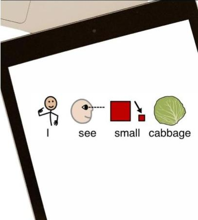

The Joshie-man uses an amazing piece of technology (proloquo2go) on his ipad which we call his "talker". It gives him a voice and allows him to communicate his wants, desires and feelings.
At school, he had a task to identify and name various vegetables, one of which was brussels sprouts. He knew exactly what he wanted to “say”, but the tools were not there for him. So he sat, he thought for a second and quickly solved this problem. He actually wrote out “I see small cabbage”.
